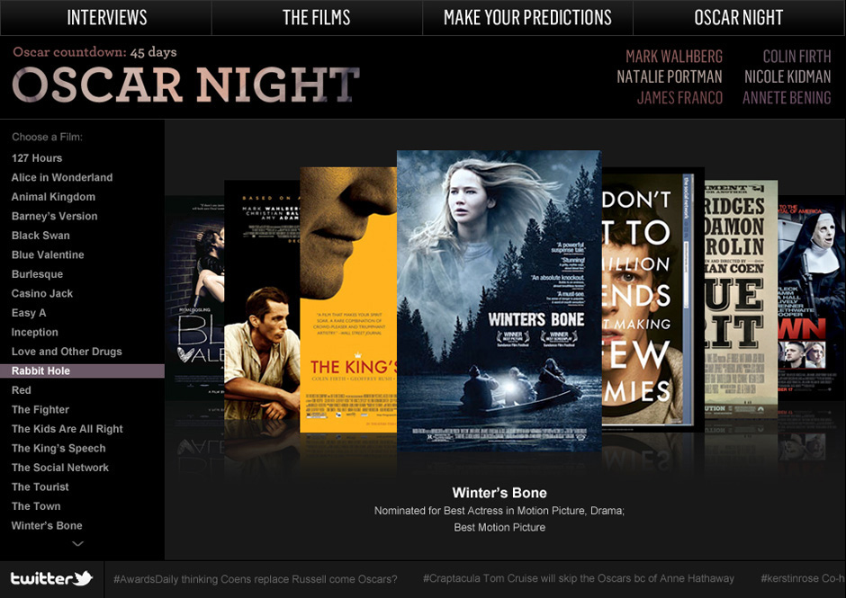
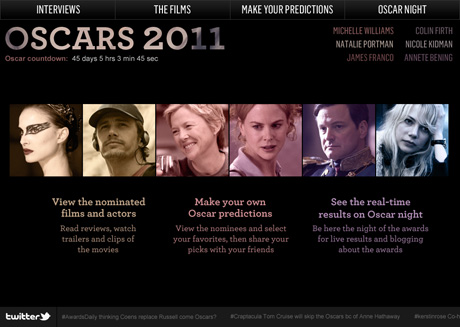
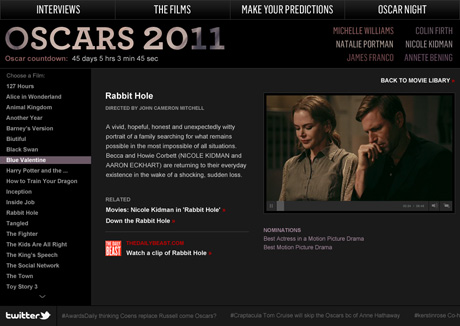
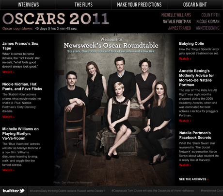
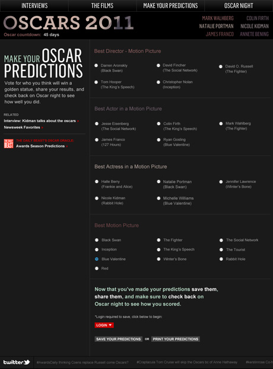
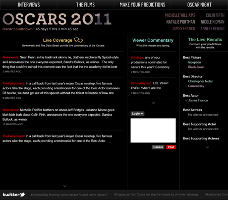

monica rachel parra
Design Director, ProductA Newsweek web application for users to learn about various nominated films, make predictions, and come back the night of the Oscars for real-time results and live blogging. The development team used the ECHO streamserver API to build a custom blogging platform with a live results checking system.
The project and team were recognized and invited to speak at an ECHO conference in San Francisco.
     